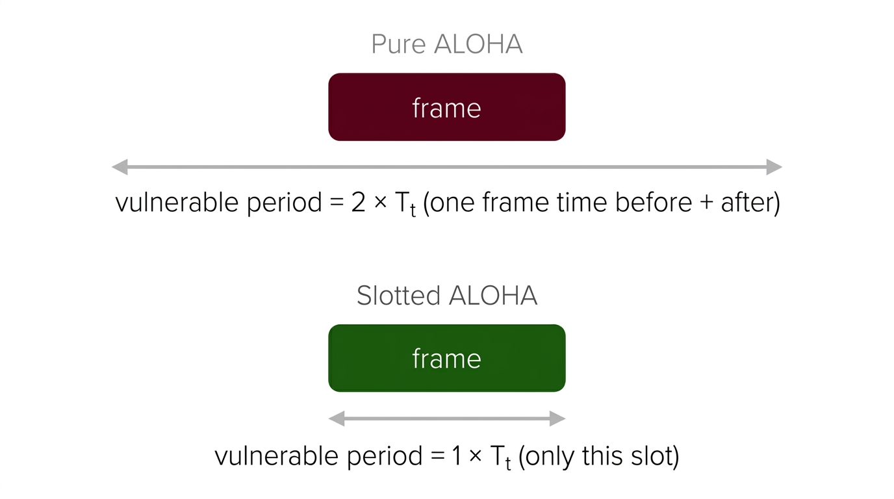

Computer Networks, Step by Step
These notes follow the lecture flow exactly: orientation → basics → layer by layer → detailed protocols → GATE numericals. Every topic from the source lecture has been captured here.
0. Orientation: How to Study Computer Networks
Computer Networks looks big because many small topics are connected. Do not treat it as one scary block. Treat it as a layered story: data starts at an application, gets wrapped layer by layer, travels through links and routers, then gets unwrapped at the receiver.
Exam Weightage and Nature
- In GATE, Computer Networks commonly contributes around 7 to 8 marks, sometimes more.
- Questions may be 1-mark, 2-mark, MCQ, MSQ, or NAT.
- Numericals dominate: subnetting, CRC, sliding window, delay, throughput, routing, and TCP congestion control.
- Out of 8 marks, roughly 5 marks come from proper numerical questions.
- The subject is concept-driven but also scoring — do not underestimate it.
Recommended Study Attitude
- Build the framework: Why networks exist, what layers do, and how data moves.
- Master repeated numericals: CRC, parity, window size, subnetting, delay, ALOHA, TCP congestion window, and DNS count.
- Compare protocols: TCP vs UDP, circuit vs packet, datagram vs virtual circuit, Go-Back-N vs Selective Repeat, DV vs LS routing.
- Solve PYQs: Many questions repeat the same core logic with new wording.
1. What Is a Computer Network?
A computer network is a telecommunication framework that allows digital devices to communicate and share hardware, software, and data resources through wired or wireless communication.
Important Words
| Word | Meaning | Teacher-style explanation |
|---|---|---|
| Telecommunication | Communication over distance | Tele means distance. Earlier telephones did this; now computers, phones, watches, printers, and IoT devices do it. |
| Autonomous | Independent/self-sufficient | Each device can work on its own. A network connects them; it does not make them slaves of one central machine. |
| Interconnected | Linked together | Links may be copper, fiber, radio, microwave, satellite, or a mix. |
| Protocol | Rules of communication | Without rules, two devices may send bits but cannot understand each other. Like a passport — everyone must follow it. |
5 Things Needed for Data Communication
The data/information to be communicated.
The device that transmits the message.
The device that receives the message.
Wired (copper, fiber) or wireless (radio, infrared).
Set of rules both parties follow — without this, communication cannot happen regardless of the hardware.
Resource sharing, communication, reliability, and scalability across devices irrespective of their hardware/software.
2. Components and Network Criteria
Basic Components
- Hosts/end systems: computers, phones, servers, IoT devices.
- Links: physical or wireless medium carrying signals.
- Network devices: repeater, hub, bridge, switch, router, gateway, access point, modem.
- Protocols: Ethernet, IP, TCP, UDP, HTTP, DNS, SMTP, FTP, DHCP, ARP.
- Addresses: MAC address for local delivery, IP address for network delivery, port number for process delivery.
Network Criteria
| Criterion | Meaning | Sub-parameters |
|---|---|---|
| Performance | How fast and efficiently data moves | Bandwidth (capacity), Throughput (actual achieved), Latency/Delay, Jitter, Transit time, Response time |
| Reliability | How consistently network works | Frequency of failure, Recovery time (MTTR), Packet loss, Availability |
| Security | Protection from unauthorized access or modification | Encryption, Authentication, Firewall, VPN, Access control |
3. Connection Types and Transmission Modes
Types of Connections
A dedicated link between exactly two devices. Like a direct phone line between two people. Secure and private.
A shared link connecting more than two devices. All devices share the same medium — collision and access control must be managed.
Transmission Modes (Simplex, Half-Duplex, Full-Duplex)
| Mode | Meaning | Example | Key Point |
|---|---|---|---|
| Simplex | Only one-way communication, ever | Radio broadcasting, keyboard to PC, TV broadcast | Receiver cannot reply back on the same channel |
| Half-Duplex | Both directions possible, but only one at a time | Walkie-talkie, older CB radio | One party must say "Over" before the other can speak |
| Full-Duplex | Both directions simultaneously | Phone call, switched Ethernet | Actually two separate one-way connections working together — that is why sometimes audio goes but does not come, or vice versa |
4. Types of Networks
Networks are classified by geographical coverage, ownership, and usage.
| Type | Range | Use | Key Point |
|---|---|---|---|
| PAN | Personal area (~10m) | Bluetooth headphones, smartwatch | Smallest range |
| LAN | Room/building/campus | Home Wi-Fi, college lab | High speed, privately owned |
| CAN | Campus | University departments | Multiple LANs connected |
| MAN | City | Metro network, cable TV network | City-scale |
| WAN | Country/world | Internet, banking network | Large-scale, uses routers and service providers |
Internet, Intranet, Extranet
- Internet: global public network of networks.
- Intranet: private network inside an organization.
- Extranet: controlled private access given to selected outsiders like vendors or partners.
5. Network Topologies
Topology means the geometric arrangement of nodes and links — how devices are interconnected. It can be physical or logical topology. Connections can be wired or wireless.
Every device is directly connected to every other device. n(n-1)/2 links for n nodes.
✓ Most reliable, private, fault-tolerant.
✗ Very expensive. 1000 devices = ~500,000 links — impractical.
All devices connect to one central hub/switch. Most popular in practice.
✓ Easy installation, fault isolation, re-configuration.
✗ Central hub failure brings down entire network. Privacy concerns.
One backbone cable, everyone connects to it (like electricity lines). Simplest and cheapest.
✓ Low cost, easy to implement and maintain.
✗ Shared medium → collision issues. Needs repeaters beyond certain length. Fault detection hard.
Each device connects to exactly two neighbors forming a closed loop. Data travels in one direction through repeaters at each station.
✓ Simple, easy re-configuration.
✗ One device failure can disrupt entire ring. Not popular today (token ring obsolete).
Hierarchical star/bus combination. Common in structured networks.
Combination of topologies, used in practical networks.
6. Switching Techniques
Switching decides how data travels from source to destination through intermediate nodes.
Circuit Switching
- A dedicated path is established before communication begins.
- Three phases: setup → data transfer → teardown.
- Good for old telephone-style continuous communication.
- Resource stays reserved even when no data is being sent — wasteful for bursty traffic.
Message Switching
- Entire message is stored and forwarded from node to node.
- No dedicated path is required.
- Large buffering is needed, so delay can be very high.
- Not used in modern networks.
Packet Switching
- Message is divided into small packets.
- Packets are stored and forwarded independently or over a logical path.
- Efficient for bursty computer data and used heavily in the Internet.
| Feature | Datagram Packet Switching | Virtual Circuit Packet Switching |
|---|---|---|
| Path | Each packet may take different path | All packets follow established logical path |
| Order | May arrive out of order | Usually arrives in order |
| Setup | No setup needed | Setup needed before data transfer |
| Example idea | IP network (the Internet) | MPLS/ATM-style logic |
7. OSI Model and TCP/IP Model
Layering breaks a big communication problem into smaller responsibilities. Each layer gives service to the layer above and uses service from the layer below.
OSI Seven Layers
| Layer | Name | Main Job | Data Unit | Key Protocols/Devices |
|---|---|---|---|---|
| 7 | Application | User-level network services | Message | HTTP, DNS, SMTP, FTP, DHCP |
| 6 | Presentation | Translation, encryption, compression | Message | SSL/TLS (in concept) |
| 5 | Session | Session/dialog management | Message | RPC, NetBIOS |
| 4 | Transport | Process-to-process delivery, reliability | Segment/Datagram | TCP, UDP |
| 3 | Network | Logical addressing and routing | Packet | IP, ICMP, ARP, OSPF, RIP — Router |
| 2 | Data Link | Framing, MAC addressing, error/flow control on one link | Frame | Ethernet, Wi-Fi — Switch, Bridge |
| 1 | Physical | Bits, signals, cables, connectors | Bits | Hub, Repeater, cables |
TCP/IP Model
| TCP/IP Layer | Comparable OSI Layers | Examples |
|---|---|---|
| Application | Application + Presentation + Session | HTTP, DNS, SMTP, FTP |
| Transport | Transport | TCP, UDP |
| Internet | Network | IP, ICMP, ARP |
| Network Access | Data Link + Physical | Ethernet, Wi-Fi |
Encapsulation Order
8. Physical Layer
The physical layer deals with transmission of raw bits over a medium. It defines electrical/optical/radio signals, bit rate, connectors, line coding, topology, and transmission mode.
Important Concepts
- Bit rate: number of bits transmitted per second (bps).
- Baud rate: number of signal changes (symbols) per second.
- Bandwidth: frequency range / capacity of medium (Hz or bps).
- Attenuation: signal weakens with distance — needs amplifiers/repeaters.
- Distortion: signal shape changes during transmission.
- Noise: unwanted signal interference (thermal, crosstalk, impulse).
Line Coding
- NRZ (Non-Return to Zero): simple, but synchronization can be difficult for long same-bit runs (long sequence of 0s or 1s).
- Manchester: transition in the middle of each bit. 0 = high-to-low, 1 = low-to-high. Good synchronization, uses 2× bandwidth. Used in classic Ethernet.
- Differential Manchester: transition rule depends on previous signal (transition at start = 0, no transition = 1). Useful because polarity reversal does not break decoding.
Nyquist and Shannon Theorems
9. Transmission Media
Guided/Wired Media
| Medium | Properties | Use |
|---|---|---|
| Twisted pair (UTP/STP) | Cheap, easy, susceptible to noise. CAT cables used in LAN. | LAN, telephone lines |
| Coaxial cable | Better shielding than twisted pair, good bandwidth | Cable TV, older Ethernet (10Base5, 10Base2) |
| Optical fiber | Very high bandwidth, low attenuation, immune to EMI, very secure | Backbone, long distance, ISP links |
Unguided/Wireless Media
- Radio waves: omnidirectional, used in Wi-Fi, AM/FM radio, and mobile communication.
- Microwaves: line-of-sight, used in towers and satellite links. Cannot bend around obstacles.
- Infrared: short range, cannot pass through walls. TV remote, IrDA.
10. Networking Devices
Devices are best remembered by the layer at which they operate and the kind of address they understand.
| Device | Layer | Works With | Main Job |
|---|---|---|---|
| Repeater | Physical | Bits/signals | Regenerates weak signal — extends cable length |
| Hub | Physical | Bits | Broadcasts incoming signal to all ports — dumb device, creates large collision domain |
| Bridge | Data Link | MAC address | Connects LAN segments and filters frames — reduces collision domain |
| Switch | Data Link | MAC address | Forwards frames to correct port only — each port is separate collision domain |
| Router | Network | IP address | Forwards packets between networks — separates broadcast domains |
| Gateway | Multiple layers | Protocol conversion | Connects dissimilar networks/protocols (e.g., different application protocols) |
Collision and Broadcast Domains
| Device | Collision Domains | Broadcast Domains |
|---|---|---|
| Hub | One (all ports in one) | One |
| Switch | Each port = separate collision domain | One per VLAN (by default, all ports = one broadcast domain) |
| Router | Each interface = separate | Each interface = separate broadcast domain |
11. Data Link Layer
The data link layer provides node-to-node delivery over one link. It converts network-layer packets into frames and manages the physical channel.
Main Responsibilities
- Framing: dividing bit stream into meaningful frames with clear start/end.
- Physical addressing: adding source and destination MAC addresses.
- Error control: detecting/correcting transmission errors (parity, CRC, Hamming).
- Flow control: preventing sender from overwhelming receiver (Stop-and-Wait, Sliding Window).
- Access control: deciding who can use shared medium (MAC protocols — ALOHA, CSMA).
Framing Methods
| Method | Idea | Problem/Solution |
|---|---|---|
| Character count | Header stores number of characters in frame | If count field corrupts, frame boundary is lost — cascading failure |
| Byte stuffing (flag bytes) | Special flag bytes mark frame boundary | Escape byte is inserted before any flag-like data byte in the payload |
| Bit stuffing | Flag pattern (01111110) marks frame boundary | After five consecutive 1s in data, sender inserts (stuffs) a 0; receiver removes it |
| Physical layer coding violation | Uses invalid signal pattern as delimiter | Works only with specific encoding schemes (e.g., Manchester) |
12. Error Detection and Correction
Errors happen because of noise, attenuation, interference, or synchronization issues.
Types of Errors
- Single-bit error: only one bit changes (rare in burst-noise environments).
- Burst error: two or more consecutive bits are affected (more common in real channels).
Hamming Distance — The Core Concept
Hamming distance between two codewords = number of bit positions where they differ.
Parity Check
- Even parity: parity bit makes total number of 1s even.
- Odd parity: parity bit makes total number of 1s odd.
- Can detect odd number of bit errors but NOT even number (they cancel out).
- Only 1 redundant bit — very cheap but limited.
- d_min = 2 for single parity — can detect 1 bit, cannot correct.
2D Parity (Two-Dimensional Parity)
Arrange data in a matrix. Apply parity to each row AND each column. At receiver, check all row and column parities.
- If a single bit is corrupted, both its row-parity and column-parity will fail → intersection reveals exact corrupted bit → can correct it.
- If 4 bits at corners of a rectangle are corrupted, all row/column parities still match → undetected error.
Checksum
Data is divided into fixed-size words. All words are added using 1's complement arithmetic. The complement of the sum is the checksum. Receiver adds all words including checksum; result should be all 1s.
13. Hamming Code — Detailed
Hamming code places parity bits at specific positions (powers of 2) within the data, not just at the end. This allows single-bit error detection AND correction.
Key Idea
- Parity bits occupy positions that are powers of 2: position 1, 2, 4, 8, 16, 32 ...
- Data bits occupy all other positions: 3, 5, 6, 7, 9, 10, 11 ...
- Each parity bit covers a specific set of positions (those whose binary representation has that power of 2 set).
How Many Parity Bits Are Needed?
Hamming Code Step-by-Step Example
- Data bits: d₁d₂d₃d₄ = 1011. Insert parity bits at positions 1,2,4. Codeword positions: p1 _ p2 _ d1 _ d2 _ d3 → p1 p2 d1 p4 d2 d3 d4 = _ _ 1 _ 0 1 1
- Calculate p1 (covers positions 1,3,5,7): p1 XOR d1 XOR d2 XOR d4 = p1 XOR 1 XOR 0 XOR 1 = p1 XOR 0 → p1 = 0 (even parity)
- Calculate p2 (covers positions 2,3,6,7): p2 XOR d1 XOR d3 XOR d4 = p2 XOR 1 XOR 1 XOR 1 = p2 XOR 1 → p2 = 1
- Calculate p4 (covers positions 4,5,6,7): p4 XOR d2 XOR d3 XOR d4 = p4 XOR 0 XOR 1 XOR 1 = p4 XOR 0 → p4 = 0
- Final codeword: 0 1 1 0 0 1 1
- At receiver: re-check parity at each position. Syndrome bits (c1,c2,c4) form a binary number. If syndrome = 0 → no error. Else syndrome = position of error bit → flip that bit.
14. CRC: Cyclic Redundancy Check (Detailed)
CRC is the most powerful and widely used error detection technique. It is based on modulo-2 polynomial division (XOR arithmetic — no carry, no borrow).
CRC Process — Sender Side
- Take dataword (message) and generator polynomial of degree r.
- Append r zeros to the right of the dataword → forms dividend.
- Perform modulo-2 division of appended dataword by generator (XOR-based long division).
- The remainder (r bits) is the CRC checksum. Replace the r appended zeros with this CRC.
- Transmit: dataword followed by CRC (total = dataword + r bits).
CRC Process — Receiver Side
- Receive the codeword (dataword + CRC).
- Divide the received codeword by the same generator using modulo-2 division.
- If remainder = 0 → no error detected. If remainder ≠ 0 → error detected.
CRC Example (Step by Step)
Dataword = 1101011011, Generator = 10011 (degree r = 4)
What CRC Can and Cannot Detect
- All single-bit errors.
- All double-bit errors (if generator has at least 3 terms).
- All burst errors of length ≤ r.
- Most burst errors of length > r (but not all 100%).
15. Flow Control Protocols
Flow control ensures the sender does not send faster than the receiver can handle. Without flow control, the receiver's buffer overflows and data is lost.
Stop-and-Wait ARQ
- Sender sends one frame and waits for ACK before sending next.
- Simple but very inefficient if propagation delay is high (most time is wasted waiting).
- Sequence numbers: only 2 needed (0 and 1), alternating.
- If ACK is lost, sender times out and retransmits. Receiver must identify duplicate frames using sequence number.
Sliding Window Protocols
Sender can send multiple frames (window size W) before waiting for ACK. This keeps the pipe full and dramatically improves utilization.
| Protocol | Retransmission Rule | Receiver Window | Sequence Number Bits m | Max Sender Window |
|---|---|---|---|---|
| Go-Back-N (GBN) | If frame i is lost, resend i and ALL frames after i | 1 (can only accept in-order frames) | m bits | W ≤ 2^m - 1 |
| Selective Repeat (SR) | Only retransmit the specific lost/damaged frame | ≥ 1 (buffers out-of-order frames) | m bits | W ≤ 2^(m-1) |
16. MAC Layer, ALOHA Protocols and Random Access
When many devices share the same medium (like a radio channel or satellite link), the MAC (Media Access Control) sublayer decides who may transmit. Random access protocols allow any station to transmit whenever it has data — but if two stations transmit simultaneously, their signals collide and both frames are corrupted. ALOHA protocols are the earliest solutions to this problem, developed at the University of Hawaii in the 1970s.

1. Pure ALOHA — The Basic Idea
Rule: whenever a station has data ready, it transmits immediately — no waiting, no coordination with other stations.
Problem: since any station can transmit at any moment, two frames can collide even if their transmissions only partially overlap — even a tiny overlap corrupts the entire frame.
Vulnerable Period
If a frame's transmission time is Tt, then any other frame that starts transmitting within Tt before the current frame begins, or Tt after it begins, will collide with it.
2. Slotted ALOHA — The Improvement
Time is divided into fixed-size slots, where each slot equals one frame transmission time (Tt). A station can only begin transmitting at the start of a slot — never mid-slot.
Benefit: now a collision only happens if two stations choose the same slot. Partial overlaps are impossible since every transmission starts exactly at a slot boundary.
Comparison Table (Exam-Ready)
| Parameter | Pure ALOHA | Slotted ALOHA |
|---|---|---|
| Transmission timing | Anytime (arbitrary moment) | Only at slot boundaries |
| Vulnerable period | 2 × Tt | 1 × Tt |
| Throughput formula | S = G · e^(-2G) | S = G · e^(-G) |
| Max throughput | 18.4% at G = 0.5 | 36.8% at G = 1.0 |
| Clock synchronization | Not needed | Yes — all stations must be synchronized |
| Collision type | Full or partial overlap | Only same-slot (head-on) collisions |
| Complexity | Simplest possible | Slightly higher (needs slot sync) |
| Historical use | Early satellite & radio links | Improved satellite and radio protocols |
MCQ Trap Points to Watch For
- Efficiency doubles in Slotted ALOHA — follows directly from the vulnerable period being halved. Not a coincidence.
- Formulas involve e (Euler's number ≈ 2.718) — questions often directly ask for "S_max = 1/2e" or "1/e" as the answer.
- Value of G at max throughput — G = 0.5 for Pure ALOHA, G = 1.0 for Slotted ALOHA — common direct MCQ, very frequently asked.
- Slotted ALOHA requires synchronized clock across all stations — frequent true/false. Pure ALOHA does NOT require sync.
- Both are random access protocols, predecessors to the CSMA family; historically used in satellite communication and early Ethernet-like systems.
- Numerical trap: if G is given (e.g., G = 1 for Pure ALOHA), substitute into the correct formula: S = 1 × e^(-2×1) = e^(-2) ≈ 0.135. Do NOT accidentally use the Slotted formula.
Tt = (1000 × 8) / 10⁶ = 8 ms.
System generates 500 frames/sec → G = 500 × 8×10⁻³ = 4 → way past G=0.5 peak.
S = 4 × e^(-2×4) = 4 × e^(-8) ≈ 4 × 0.000335 ≈ 0.00134 → almost zero throughput. System is completely congested.
Lesson: Once G exceeds 0.5 (Pure) or 1.0 (Slotted), throughput collapses — ALOHA cannot handle high loads.
Backoff Algorithm (Binary Exponential Backoff)
- After the k-th collision (k starts at 1), station chooses a random integer r from {0, 1, 2, ..., 2^k − 1}.
- Station waits r × (slot time or Tp) before attempting retransmission.
- Larger k → wider range → lower probability of re-collision.
- After 16 consecutive collisions, give up and report failure to upper layer.
CSMA (Carrier Sense Multiple Access)
An improvement over ALOHA: stations listen (sense the carrier) before transmitting.
- 1-persistent CSMA: if idle → transmit immediately (probability 1). If busy → wait, then retry immediately when idle. Problem: many waiting stations all transmit at once → high collision on busy channels.
- Non-persistent CSMA: if busy → wait a random time before sensing again. Reduces collision but wastes idle time when channel becomes free.
- p-persistent CSMA: if idle → transmit with probability p, defer with (1−p). Balances between 1-persistent and non-persistent.
17. CSMA/CD and CSMA/CA
CSMA/CD (Collision Detection) — Classic Ethernet
- Used in wired (shared bus) Ethernet.
- Station listens while transmitting. If collision detected → stop, send jam signal, then backoff and retry.
- Minimum frame size constraint: A station must still be transmitting when a collision signal arrives (worst case: collision at far end of wire and signal returns).
CSMA/CA (Collision Avoidance) — Wi-Fi (802.11)
- Used in wireless. Cannot detect collision while transmitting (signals too weak to detect simultaneously).
- Uses IFS (Inter-Frame Space) and random backoff to avoid collisions before they happen.
- Uses ACK to confirm receipt (since sender cannot directly detect collision).
- RTS/CTS (optional): Request-To-Send / Clear-To-Send handshake to solve hidden node problem.
18. Ethernet Frame Format
| Field | Size | Purpose |
|---|---|---|
| Preamble | 7 bytes | Alternating 1s and 0s for clock synchronization |
| SFD (Start Frame Delimiter) | 1 byte (10101011) | Signals that next byte is destination MAC |
| Destination MAC | 6 bytes (48 bits) | MAC address of intended receiver |
| Source MAC | 6 bytes (48 bits) | MAC address of sender |
| Type / Length | 2 bytes | Identifies upper-layer protocol (≥1536 = type like 0x0800 for IP) or length |
| Data (Payload) | 46–1500 bytes | Actual data being carried. Min 46 to meet 64-byte minimum frame size. |
| FCS (CRC) | 4 bytes | CRC-32 for error detection |
19. Network Layer
The network layer provides host-to-host delivery across multiple networks. Its main ideas are logical addressing, routing, and packet forwarding.
Network Layer Jobs
- Logical addressing: IPv4/IPv6 addresses identify hosts and networks globally.
- Routing: path selection from source network to destination network.
- Forwarding: moving packet from input interface to correct output interface at each router.
- Fragmentation: breaking packet if next link MTU is smaller.
Key Protocols at Network Layer
| Protocol | Use |
|---|---|
| IP (IPv4, IPv6) | Best-effort packet delivery — unreliable, connectionless |
| ICMP | Error reporting and diagnostics (ping uses ICMP echo request/reply) |
| ARP | Find MAC address for known IP address in local network |
| RARP | Find IP address for known MAC address (older, replaced by DHCP) |
| IGMP | Internet Group Management Protocol — manages multicast group membership |
| DHCP | Dynamically assigns IP configuration (IP, mask, gateway, DNS) |
20. IPv4 Header — Detailed Field by Field
The IPv4 header has a fixed part (20 bytes minimum) and a variable options part (up to 40 bytes more). Total header max = 60 bytes.
| Field | Size | Description |
|---|---|---|
| Version | 4 bits | IP version: 4 for IPv4, 6 for IPv6 |
| IHL (Header Length) | 4 bits | Header length in 32-bit words. Minimum = 5 (20 bytes), Maximum = 15 (60 bytes) |
| TOS / DSCP | 8 bits | Type of Service — priority/QoS markings |
| Total Length | 16 bits | Total packet size (header + data) in bytes. Max = 65535 bytes |
| Identification | 16 bits | Unique ID for each original datagram — used to reassemble fragments |
| Flags | 3 bits | Bit 0: reserved. Bit 1: DF (Don't Fragment). Bit 2: MF (More Fragments follow) |
| Fragment Offset | 13 bits | Position of this fragment in original datagram, measured in 8-byte units |
| TTL (Time To Live) | 8 bits | Decremented by 1 at each router. When 0, packet is discarded. Prevents infinite loops. |
| Protocol | 8 bits | Identifies upper-layer protocol: 6=TCP, 17=UDP, 1=ICMP |
| Header Checksum | 16 bits | Error check for header only (not data). Recomputed at each router (TTL changes) |
| Source IP Address | 32 bits | NEVER changes as packet traverses routers |
| Destination IP Address | 32 bits | NEVER changes as packet traverses routers |
| Options + Padding | 0–40 bytes | Optional: Record Route, Source Routing, Timestamp, etc. |
IP Fragmentation
When a packet is too large for the next link's MTU, a router fragments it. Each fragment gets the same identification number but its own fragment offset and flags.
IP Header Options
| Option | Purpose |
|---|---|
| Record Route | Each router adds its own IP to the options field. Max 9 routers (9×4 = 36 bytes + 4 bytes overhead = 40 bytes max options) |
| Strict Source Routing | Sender specifies exact sequence of routers. Datagram discarded if it visits a router not in the list. |
| Loose Source Routing | Specified routers MUST be visited, but others may also be used. More flexible than strict. |
| Timestamp | Each router records time it processed the datagram. Useful for debugging and measuring transit times. |
21. IP Addressing and Subnetting
IPv4 address is 32 bits, commonly written in dotted decimal notation, such as 192.168.1.10.
Classful Addressing
| Class | First Octet Range | Default Mask | Network Bits | Host Bits | Use |
|---|---|---|---|---|---|
| A | 1–126 | 255.0.0.0 /8 | 8 | 24 → ~16M hosts | Very large networks |
| B | 128–191 | 255.255.0.0 /16 | 16 | 16 → ~65K hosts | Medium networks |
| C | 192–223 | 255.255.255.0 /24 | 24 | 8 → 254 hosts | Small networks |
| D | 224–239 | Not for hosts | — | — | Multicast |
| E | 240–255 | Reserved | — | — | Experimental |
Note: 127.x.x.x is reserved for loopback (127.0.0.1 = localhost).
Special Addresses
- 0.0.0.0: unspecified address / default route context.
- 127.0.0.0/8: loopback range; 127.0.0.1 is localhost.
- 255.255.255.255: limited broadcast (local network).
- Network address: host bits all 0 (identifies the network).
- Broadcast address: host bits all 1 (sent to all hosts in network).
- Private ranges: 10.0.0.0/8, 172.16.0.0/12, 192.168.0.0/16 — not routable on internet.
Subnetting Rules (VLSM/CIDR)
NAT (Network Address Translation)
Allows multiple private IP hosts to access the Internet using one or few public IP addresses. NAT router maintains a translation table mapping (private IP, private port) → (public IP, public port). Very common in home routers.
22. CIDR and Longest Prefix Match
CIDR (Classless Inter-Domain Routing)
CIDR eliminates classful boundaries. A block is defined by an IP address and a prefix length (/n). This allows more efficient allocation of IP addresses (no waste of class A/B blocks).
- Route aggregation (supernetting): combine multiple smaller networks into one larger block announced to the internet.
- VLSM (Variable Length Subnet Masking): different subnets can have different prefix lengths within the same network.
Longest Prefix Match (CIDR Routing)
When a router's routing table has multiple matching entries for a destination IP, it uses the entry with the longest (most specific) prefix.
- Take the destination IP address from the incoming packet.
- For each routing table entry (prefix/mask), perform: Result = Destination IP AND Subnet Mask. Check if Result = Network Address of that entry.
- Collect all matching entries.
- Among matching entries, select the one with the LONGEST prefix (largest mask = smallest block = most specific).
- Forward the packet out the interface associated with that entry.
23. ARP, RARP, ICMP, and IGMP
ARP — Address Resolution Protocol
ARP finds the MAC (physical) address when only the IP (logical) address is known. Needed because IP routing brings packet to the right network, but MAC address is needed for final delivery on the local link.
- Source knows destination's IP but not its MAC address.
- Source broadcasts an ARP Request packet on the local network: "Who has IP X.X.X.X? Tell IP Y.Y.Y.Y (me)." The broadcast destination MAC = FF:FF:FF:FF:FF:FF.
- Every device on the local network receives the broadcast.
- The device with that IP address sends a unicast ARP Reply: "IP X.X.X.X is at MAC AA:BB:CC:DD:EE:FF."
- Source caches the MAC address in its ARP cache for future use.
RARP — Reverse ARP
RARP does the opposite of ARP: finds the IP address when only MAC address is known. Used when a diskless machine boots and knows its own MAC but not its IP.
- Machine broadcasts a RARP Request containing its own MAC address.
- A RARP Server on the network replies with the corresponding IP address.
- Request = Broadcast, Reply = Unicast (directly to the requesting machine).
- RARP is largely obsolete — replaced by DHCP (more flexible).
ICMP — Internet Control Message Protocol
IP is unreliable and provides no error reporting. ICMP is the "journalist" of the network layer — it reports problems but has no authority to fix them. Travels inside IP packets (Protocol number = 1).
- TTL Exceeded: router discarded packet because TTL reached 0. Sends ICMP "Time Exceeded" to source. Used by traceroute.
- Destination Unreachable: all links to destination failed. Router informs source immediately.
- Parameter Problem: header checksum failed → router discards and sends ICMP to source.
- Redirect: tells source a better path exists.
- Echo Request/Reply (ping): check if host is reachable and measure round-trip time.
- Router Solicitation: host asks "Is there a router on my network?"
- Router Advertisement: router proactively announces its presence.
- Timestamp Request/Reply: synchronize clocks or measure transit time.
IGMP — Internet Group Management Protocol
IGMP manages multicast group membership. A host uses IGMP to tell local routers which multicast groups it wants to receive. Routers use IGMP to maintain a list of active multicast group members on each local network.
- Multicast addresses: Class D range (224.0.0.0 – 239.255.255.255).
- IGMP runs between host and its local router (not between routers).
24. Routing
Routing decides the best path for packets. A router uses a routing table and forwards packets based on destination IP address prefix matching.
Static vs Dynamic Routing
- Static routing: manually configured by network admin. Simple, low overhead, predictable. Not adaptive — cannot respond to failures automatically.
- Dynamic routing: routers exchange information and update routes automatically. Adaptive to topology changes. More overhead but more robust.
Common Routing Protocols
| Protocol | Type | Algorithm | Key Notes |
|---|---|---|---|
| RIP | Distance Vector (IGP) | Bellman-Ford | Hop count metric, max 15 hops. Uses UDP port 520. Slow convergence. Still in use in small networks. |
| OSPF | Link State (IGP) | Dijkstra | Cost metric, common within an organization. Fast convergence. Uses IP directly (Protocol 89). No max hop limit. |
| BGP | Path Vector (EGP) | Path vector | Used between Autonomous Systems on Internet. Uses TCP port 179. Policy-based routing. |
25. Routing Algorithms in Detail
Distance Vector Routing (DVR)
- Each router maintains a table: distance to every destination via known neighbors.
- Periodically shares its ENTIRE table with DIRECT NEIGHBORS only.
- Each router updates using Bellman-Ford: d(X, Y) = min over all neighbors Z of {d(Z, Y) + cost(X, Z)}.
- Popular example: RIP (max 15 hops).
- Local knowledge (only knows its neighbors' info) → slow convergence.
Count-to-Infinity Problem
When a link fails, distance vector routers may loop and slowly count up to infinity before realizing the destination is unreachable.
Solutions to Count-to-Infinity
- Split Horizon: do not advertise a route back to the neighbor from whom it was learned. Solves 2-node instability.
- Poison Reverse: advertise a route back to the neighbor, but with infinite cost (metric = 16 in RIP). Explicit way to tell neighbor "don't use me for this route."
- Triggered Updates: send routing update immediately when a change occurs, not just at the next scheduled interval. Speeds up convergence.
- Route poisoning: when a link fails, immediately set its metric to infinity and propagate.
Link State Routing (LSR)
- Each router floods its ENTIRE network with its LOCAL link-state (neighbor info + costs) to ALL routers.
- Each router builds complete topology map (LSDB — Link State Database).
- Each router independently runs Dijkstra's algorithm to find shortest path tree.
- No count-to-infinity problem. Fast convergence.
- Higher computational and memory cost. More bandwidth for flooding.
- Popular example: OSPF.
Dijkstra's Algorithm Example
- Start from source node. Mark it as finalized with cost 0.
- For each unfinalized neighbor of finalized nodes, update tentative cost = min(current cost, finalized_node_cost + edge_weight).
- Greedily pick the unfinalized node with the smallest tentative cost and finalize it.
- Repeat until all nodes are finalized.
26. Transport Layer
Transport layer provides process-to-process (end-to-end) communication. Network layer delivers packet to the host; transport layer delivers data to the correct application process using port numbers.
Must-Have vs Optional Functions
| Function | Mandatory? | Who provides it |
|---|---|---|
| Process-to-process delivery (port addressing) | YES — MUST have | Both TCP and UDP |
| Recovery from lost packets | Optional | TCP (UDP does not) |
| Detection of duplicate packets | Optional | TCP (UDP does not) |
| Packet delivery in correct order | Optional | TCP (UDP does not) |
Well-Known Port Numbers
| Protocol | Port | Transport |
|---|---|---|
| HTTP | 80 | TCP |
| HTTPS | 443 | TCP |
| FTP (control) | 21 | TCP |
| FTP (data) | 20 | TCP |
| SSH | 22 | TCP |
| Telnet | 23 | TCP |
| SMTP | 25 | TCP |
| DNS | 53 | UDP (mostly), TCP for zone transfers and large responses |
| DHCP Server | 67 | UDP |
| DHCP Client | 68 | UDP |
| POP3 | 110 | TCP |
| IMAP | 143 | TCP |
| SNMP | 161 | UDP |
27. TCP — Transmission Control Protocol
TCP is connection-oriented, reliable, byte-stream based, provides ordered delivery, and uses port numbers for process identification.
TCP Features
- Connection establishment using three-way handshake.
- Sequence numbers and acknowledgements for reliability.
- Retransmission on loss (with timeout or duplicate ACKs).
- Flow control using receive window (RWND) — receiver advertises buffer space.
- Congestion control using congestion window (CWND) — sender estimates network capacity.
- Full-duplex communication (two separate simplex streams).
- Byte-stream service: no message boundaries, just a stream of bytes.
Three-Way Handshake (Connection Establishment)
- Client → Server: SYN, Seq = x (client's initial sequence number)
- Server → Client: SYN + ACK, Seq = y, Ack = x+1 (server's ISN + acknowledges client's SYN)
- Client → Server: ACK, Ack = y+1 (acknowledges server's SYN)
Four-Way Handshake (Connection Termination)
- Initiator → Other: FIN (want to close this direction of data flow)
- Other → Initiator: ACK (acknowledge the FIN)
- Other → Initiator: FIN (other side also ready to close)
- Initiator → Other: ACK (acknowledge the other's FIN)
Because TCP is full-duplex, each direction closes independently. That's why 4 messages, not 3. The initiator waits in TIME_WAIT state for 2×MSL (Maximum Segment Lifetime, typically 2 minutes) before fully closing — to handle delayed packets.
TCP Flow Control
The receiver advertises its remaining buffer space in the RWND (receive window) field of every ACK. The sender must not send more data than RWND bytes ahead of the last acknowledged byte.
28. TCP State Machine
TCP connections go through a sequence of states from establishment to termination. Understanding key states is important for GATE.
| State | Who Enters | Meaning |
|---|---|---|
| CLOSED | Both | No connection. Initial and final state. |
| LISTEN | Server | Waiting for incoming connection requests (passive open). |
| SYN_SENT | Client | SYN sent, waiting for SYN+ACK from server. |
| SYN_RECEIVED | Server | SYN received, SYN+ACK sent, waiting for final ACK. |
| ESTABLISHED | Both | Connection established. Data can flow in both directions. |
| FIN_WAIT_1 | Active closer | FIN sent (application called close), waiting for ACK or FIN. |
| FIN_WAIT_2 | Active closer | Got ACK for FIN, waiting for FIN from other side. |
| CLOSE_WAIT | Passive closer | Got FIN from other side, ACK sent. App still sending data. |
| LAST_ACK | Passive closer | FIN sent (app closed), waiting for final ACK. |
| TIME_WAIT | Active closer | Both FINs exchanged. Waiting 2×MSL before fully closing to handle delayed packets. Prevents port reuse confusion. |
| CLOSING | Both | Simultaneous close — both sent FIN at same time. |
29. TCP Congestion Control
Congestion control manages the rate at which sender injects data into the network — unlike flow control which manages the receiver's buffer. The problem: network capacity (transmission medium) is dynamic and unknown to the sender.
Three Phases of TCP Congestion Control
Phase 1: Slow Start (Exponential Increase)
- Start with CWND = 1 MSS (Maximum Segment Size).
- For each acknowledged segment: CWND = CWND + 1 MSS. (Doubles each RTT — exponential growth.)
- Continue until CWND reaches ssthresh (slow start threshold, initially = RWND/2).
- Called "slow start" because it starts with 1 MSS (slow), but growth is exponential (actually fast).
Phase 2: Congestion Avoidance (Linear/Additive Increase)
- Once CWND ≥ ssthresh, switch to additive increase: CWND = CWND + 1 MSS per RTT (linear growth).
- Continue until CWND reaches receiver's maximum (RWND) or until congestion is detected.
Phase 3: Congestion Detection (Multiplicative Decrease)
Congestion is detected in two ways:
ssthresh = CWND / 2
CWND = 1 MSS (restart slow start)
Back to Phase 1 completely.
ssthresh = CWND / 2
CWND = ssthresh (Fast Recovery)
Skip slow start → go directly to congestion avoidance.
Complete Example Walk-Through
30. UDP — User Datagram Protocol
UDP is connectionless, lightweight, message-oriented, and does not provide reliability, ordering, or congestion control by itself.
Where UDP Is Useful
- DNS queries — short, frequent, retrying is fine if no response.
- DHCP — initial host may not even have an IP address.
- Real-time audio/video streaming — late retransmitted data is useless (delay matters more than perfection).
- Online gaming where application manages tolerance.
- Routing table exchanges (RIP).
| Feature | TCP | UDP |
|---|---|---|
| Connection | Connection-oriented (3-way handshake) | Connectionless (no handshake) |
| Reliability | Reliable (ACKs, retransmission) | Best effort (no ACKs) |
| Ordering | Maintains byte order | No ordering guarantee |
| Error checking | Yes (checksum mandatory) | Checksum optional in IPv4, mandatory in IPv6 |
| Flow control | Yes (RWND) | No |
| Congestion control | Yes (CWND, slow start) | No |
| Speed/overhead | Higher overhead | Low overhead (8-byte header) |
| Use case | Web (HTTP), email (SMTP), file (FTP) | DNS, DHCP, real-time media, SNMP |
UDP header: Source Port (2B), Destination Port (2B), Length (2B), Checksum (2B) = 8 bytes total.
31. Application Layer
The application layer provides services directly used by user applications. These are network-facing protocols — not the app itself but the network protocols it uses.
Important Protocols
| Protocol | Full Form/Use | Transport | Port |
|---|---|---|---|
| HTTP | HyperText Transfer Protocol — web page transfer | TCP | 80 |
| HTTPS | HTTP over TLS — secure web | TCP | 443 |
| FTP | File Transfer Protocol — file transfer (2 connections: control + data) | TCP | 21 (ctrl), 20 (data) |
| SMTP | Simple Mail Transfer Protocol — email sending between servers | TCP | 25 |
| POP3 | Post Office Protocol v3 — email download (deletes from server) | TCP | 110 |
| IMAP | Internet Message Access Protocol — email access (stays on server) | TCP | 143 |
| DNS | Domain Name System — name to IP resolution | UDP (mostly), TCP for zone transfer | 53 |
| DHCP | Dynamic Host Configuration Protocol — auto IP configuration | UDP | 67 (server), 68 (client) |
| Telnet | Remote terminal access (unencrypted) | TCP | 23 |
| SSH | Secure Shell — encrypted remote login | TCP | 22 |
| SNMP | Simple Network Management Protocol — network device management | UDP | 161 |
When a Browser Opens a Web Page (Complete Flow)
- User types URL. Browser needs server IP → DNS resolution happens first (UDP query to DNS server).
- After IP is known, TCP 3-way handshake with web server (port 80 for HTTP, 443 for HTTPS).
- Browser sends HTTP GET request over the established TCP connection.
- Server responds with HTTP response containing web page content.
- Browser renders the page. May send additional HTTP requests for CSS, JS, images (each may reuse same TCP connection or open new ones).
32. DNS — Domain Name System
DNS translates human-friendly domain names (e.g., www.google.com) into IP addresses. It is hierarchical and distributed — no single server knows all names.
DNS Hierarchy
- Root server: top of hierarchy, knows TLD server addresses. 13 root server clusters worldwide.
- TLD (Top-Level Domain) server: handles .com, .org, .in, .net, etc.
- Authoritative server: gives final, definitive answer for a specific domain (e.g., google.com's name servers).
- Local resolver (recursive resolver): usually provided by ISP or organization. Performs all lookups on behalf of the client and caches results.
Recursive vs Iterative Query
| Type | Meaning | Who does the work |
|---|---|---|
| Recursive | Client asks resolver: "Find me the full answer." Resolver must provide a complete answer or error. | Resolver contacts all servers on behalf of client |
| Iterative | Server replies with best referral (next server to contact), not the final answer. | Client contacts each server in the chain itself |
DNS Query Count (GATE Favorite)
For a domain like www.gate.org.in with no cached records anywhere:
- If cache has some entries, count only uncached levels.
- If "no records cached anywhere" → count all hierarchy levels.
- For multi-level domain like .org.in, count it as TWO levels (.in and .org.in), not one.
- Count messages vs count round-trips — clarify which is asked.
33. PYQ Patterns and Teacher Traps
Pattern 1: Order of Operations in Web Browsing
If a host has just started and browser requests a remote web page:
Pattern 2: Which Protocol Uses UDP?
- UDP: DNS, DHCP, SNMP, RIP, real-time multimedia, online gaming.
- TCP: HTTP, HTTPS, FTP, SMTP, POP3, IMAP, Telnet, SSH, BGP.
- Runs directly on IP (neither TCP nor UDP): OSPF, ICMP, IGMP.
Pattern 3: Address Type by Layer
| Layer | Address | Size | Example Question Clue |
|---|---|---|---|
| Data Link | MAC address | 48 bits (6 bytes) | Switch, frame, local network segment |
| Network | IP address | 32 bits (IPv4) | Router, packet, source-to-destination host |
| Transport | Port number | 16 bits | Process, application, TCP/UDP segment |
Pattern 4: IP Header Fields — What Changes at Each Hop?
| Field | Changes at Router? | Reason |
|---|---|---|
| Source IP | NO | Always stays the original sender's IP |
| Destination IP | NO (normally) | Always stays destination. Exception: MPLS, NAT |
| TTL | YES (decremented by 1) | Each router decrements TTL |
| Header Checksum | YES (recomputed) | TTL changed → checksum must be recomputed |
| Total Length | YES (if fragmented) | Fragmentation changes length |
| Flags/Fragment Offset | YES (if fragmented) | Set during fragmentation |
Pattern 5: Numericals to Practice
- CRC remainder and codeword (modulo-2 division practice is essential).
- Hamming parity-bit count (2^r ≥ m + r + 1).
- Stop-and-wait utilization (η = 1/(1+2a)).
- GBN and SR window size from sequence bits.
- Sliding window efficiency with/without errors.
- Subnet network/broadcast/usable range (AND with mask).
- Longest prefix match in routing table.
- DNS query-response count for given domain.
- ALOHA throughput (S = G·e^(-2G) for Pure, S = G·e^(-G) for Slotted).
- CSMA/CD minimum frame size (Tt ≥ 2×Tp).
- TCP congestion window growth and state after timeout/3-dup-ACK.
- IP fragmentation: number of fragments, offset values, MF bits.
Pattern 6: TCP State Machine Questions
- After FIN sent → FIN_WAIT_1
- After receiving ACK for our FIN (but not their FIN yet) → FIN_WAIT_2
- After receiving their FIN and sending our ACK → TIME_WAIT (2×MSL wait)
- Passive closer after receiving FIN: sends ACK → CLOSE_WAIT, then sends FIN → LAST_ACK
34. Final Revision Sheet
Layer-wise One-Liners
- Physical: bits as signals over medium (NRZ, Manchester, connectors, baud rate).
- Data Link: frames, MAC address, error/flow control on one link (CRC, parity, Stop-and-Wait, GBN, SR).
- Network: packets, IP address, routing across networks (IP, ARP, ICMP, fragmentation).
- Transport: segments/datagrams, ports, process-to-process delivery (TCP with congestion control, UDP).
- Application: user-facing protocols like HTTP, DNS, SMTP, FTP, DHCP.
Must-Remember Formulas
Protocol Transport Quick Reference
| TCP | UDP | Directly over IP |
|---|---|---|
| HTTP(80), HTTPS(443), FTP(20,21), SMTP(25), POP3(110), IMAP(143), Telnet(23), SSH(22), BGP(179) | DNS(53), DHCP(67/68), SNMP(161), RIP, Real-time media, TFTP(69) | OSPF(89), ICMP(1), IGMP(2) |
Router Behavior at Each Hop
| Modified by Router | NOT Modified by Router |
|---|---|
| TTL (decremented), Header Checksum (recomputed), Fragmentation fields (if fragmented), Destination MAC address | Source IP address, Destination IP address (normally), Identification, Protocol field |
Final Teacher Advice
In GATE: Most networking marks come from numericals. Practice CRC (XOR division is tricky), sliding window efficiency, subnetting, TCP congestion window growth, and DNS count carefully. These same patterns repeat with new numbers every year.